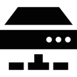

<!DOCTYPE html PUBLIC "-//W3C//DTD HTML 4.01//EN" "http://www.w3.org/TR/html4/DTD/strict.dtd">
<html>

<head>
 <title>KVM - network restart</title>
 <link rel="stylesheet" type="text/css" href="../../css/global.css">
 <link rel="stylesheet" type="text/css" href="../../css/sunburst.css">
 <meta http-equiv="Content-Type" content="text/html; charset=us-ascii">
 <meta name="Keywords" content="kvm, network">
 <meta name="Author" content="Luis M. Pena">
 <script type="text/javascript" src='../../js/prettify/run_prettify.js'></script>
</head>

<body>
 <div id='body'>
 <div id='content'>

 <p class='timestamp'>&gt; 12th October 2014, 12:56 &nbsp;&nbsp;&nbsp;&nbsp;&nbsp;&nbsp;Lux</p>

<h1>KVM network restart</h1>

	

	<p> 
		While working with KVM virtual networks, it arises often enough the need to edit the network definition, like editing new MAC / IP mappings. This causes all the associated guests to lose network connectivity, and it is required to detach / re-attach their network interfaces. There is a <a href='http://git.zaytsev.net/?p=anubis-puppet.git;a=blob;f=manifests/files/common/network-restart'>shell script</a> to perform this operation on the default network, with a few constraints.
	</p>
	<p>
		To avoid those constraints and allow the attachment of any network, I wrote the following <a href='./net_restart.py'>python script</a>, that requires as arguments the network or networks to reattach:
	</p>


<pre class='prettyprint'>
#!/usr/bin/env python
#
# Script to enable restarting a network: 
#       network interfaces are detached / reattached
#
# (c) Luis M Pena <coderazzi@gmail.com> 2014
#     Version 1.0
#
# This work is herewith placed in public domain.


import argparse, libvirt, sys, time
import xml.etree.ElementTree as XTree

clParser = argparse.ArgumentParser(description='VIRT network restarter')
clParser.add_argument('networks', type=str, nargs='+')
clParser.add_argument('-c', '--connect')
args = clParser.parse_args()


conn = libvirt.open(args.connect)
if not conn:
    hypervisor = args.connect or '(default)'
    print 'Failed to open connection to the hypervisor:', hypervisor
    sys.exit(1)

devices=[]
for network in args.networks:
    try:
        net = conn.networkLookupByName(network)
    except:
        print >> sys.stderr, 'Invalid network name:', network
        continue
    print 'Stopping network', network
    net.destroy()
    for did in conn.listDomainsID():
        domain  = conn.lookupByID(did)
        xmlDesc = domain.XMLDesc(0)
        for n in XTree.fromstring(xmlDesc).findall('devices/interface'):
            if n.get('type')=='network':
                source, mac = [n.find(x) for x in ['source', 'mac']]
                source      = source is not None and source.get('network')
                mac         = mac    is not None and mac.get('address')
                if network == source:
                    message = '%s: detaching device %s, on network %s'
                    print message % (domain.name(), mac, network)
                    xml = XTree.tostring(n)
                    domain.detachDevice(xml)
                    devices.append((domain, mac, xml))
    print 'Starting network', network
    net.create()

if devices:
    print 'Reattaching devices...'
    time.sleep(1)
    for domain, mac, xml in devices:
        print 'Attaching device', mac,'to domain', domain.name()
        domain.attachDevice(xml)
</pre>


</div></div>
</body>
</html>